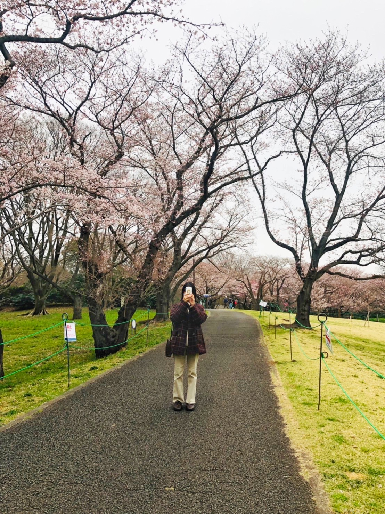
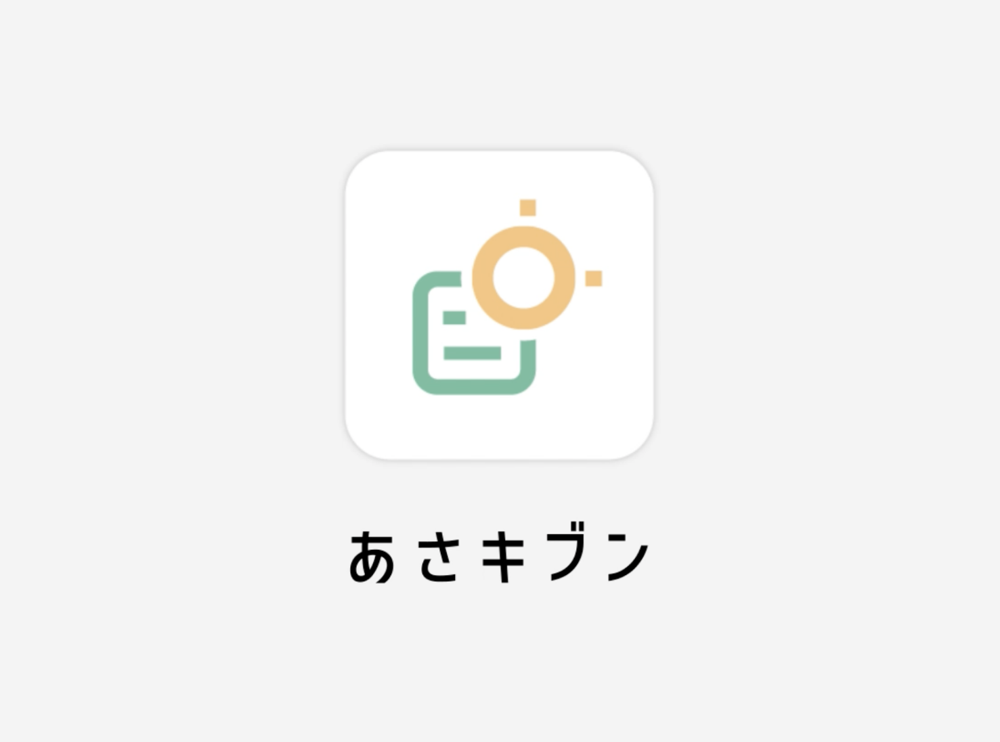

TAKAGIHIKARU
PORTFOLIO
Scroll
ABOUT
ポートフォリオをご覧いただきありがとうございます！
高木 日奏琉
takagihikaru
東京工科大学デザイン学部デザイン学科
視覚デザイン専攻4年
愛知県に生まれ、神奈川県で育つ。
神奈川県立麻生高等学校を卒業し、東京工科大学デザイン学部に入学。
学業の他にも学生有志団体「POSTMAN」での活動や、WEBコンテンツデザインのSAとしてwebデザインを後輩に教えている。
現在デザイナーを目指して就職活動中。

WORKS
GRAPHIC
仮想木製玩具店ブランディング
IMAGO
イラストポートフォリオサイト
TAKAzi
東京工科大学学生有志団体
ポストマン
UI/UX
仮想大田区朝活推進サービス
おおた、あさキブン。
仮想東京工科大学教師チャットアプリ
COACHAT
VIDEO

仮想大田区朝活推進サービス
サイネージ動画
あさキブン。
aaa
aaa